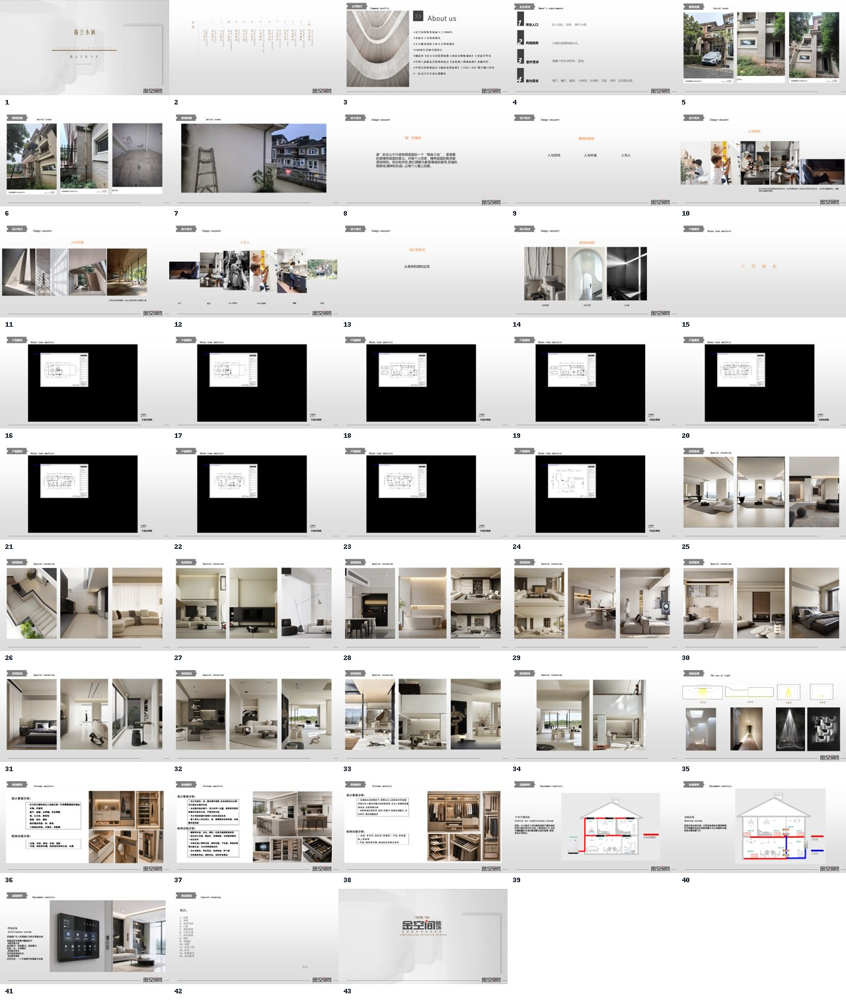

这个页面展示什么？
真实自动化流程在本地处理项目资料；这个网页只作为作品展示页，用来说明结果样式和工作流价值。
DESIGNER WORKFLOW OPTIMIZATION
面向方案汇报场景的工作优化实践。把现场图、意向图、平面图等素材整理成可编辑的汇报 PPT， 减少设计师在汇报前反复分类、排版和检查的时间。

真实自动化流程在本地处理项目资料；这个网页只作为作品展示页，用来说明结果样式和工作流价值。
素材分类、页面结构匹配、初稿生成。
一份可以继续编辑和调整的 PowerPoint 文件。